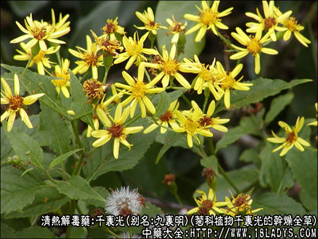
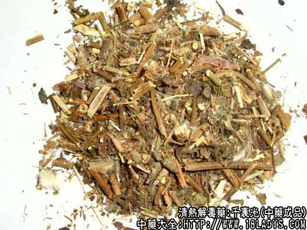
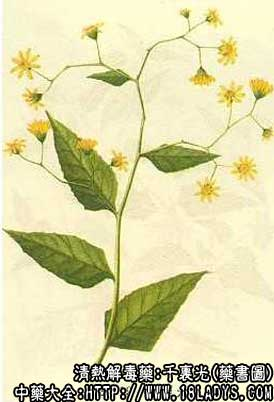

千里光为常用中药，始终于《本草图经》。《本草纲目》列入草部蔓草类。
别名：千里及、千里明、九里明、一扫光。
来源：为菊科植物千里光的干燥全草。均为野生。
产地：主产于江苏、安徽、浙江、江西、湖南、云南、四川等地。
性状鉴别：干燥的全草长约100厘米。茎圆柱状，表面棕黄色。质坚硬、断面髓部发达，白色。叶多皱缩，破碎，呈椭圆状三角形或卵圆披针形，基部戟形或截形，边缘有不规则缺刻，暗绿色或暗灰色，质脆。有时枝梢带有枯黄色差别状花序。气微、味苦。
主要成分：全草含大量的毛茛黄素、菊黄质，及少量的β-胡萝卜素；还含生物碱，挥发油、黄酮甙、鞣质、酚类等。花含类胡萝卜素。
药理作用：1、抗菌作用：临床实验认为50%的千里光全草煎剂，对志贺氏痢疾杆菌和金黄色葡萄球菌有较强的抗菌作用，有效浓度分别为1:1024和1:512，对伤寒、副伤寒甲、副伤寒乙、痢疾、大肠、变形、腊样炭疽等杆菌有抑制作用。
2、抗螺旋体作用：50%的千里光水煎剂，在体外对黄疸出血型钩端体的抑制很强（塑料板法、试管法）。各种提取物都有不同程度的体外抗螺旋体作用。其中以醚提取液效果较好。
3、其它作用：煎剂在试管中，1:40浓度对人阴道滴虫有抑制作用，对运动神经中枢有麻痹作用。
炮制：切段，生用。
性味：苦、寒。
归经：入肝、肺经。
功能：清热解毒、清肝明目、凉血消肿。
主治：上呼吸道感染，扁桃体炎，咽喉炎，肺炎，眼结膜炎，痢疾，肠炎，阑尾炎，急性淋巴炎，流行性感冒，败血症，丹毒疔疮，阴道滴虫。
临床应用：本品为清热解毒药，故对各种炎症疾病有效。
1、治上呼吸道感染、大叶肺炎、阑尾炎等均为有效。本品单用研末制成片剂。每片重0.35g每次片，日服4次。
2、治疗各种眼科疾病：将千里光制成50%的眼药水，每2～4小时滴1次，有效率为63%以上，与氯霉素眼药水治疗组对照，结果两者细菌培养阴转及临床治愈平均天数很接近。并报道有千里光治疗眼病无禁忌及副作用，病程在1月以内者痊愈者较高。
3、治疗滴虫性阴道炎：据报道，在阴道常规冲洗后，用棉纱布蘸100%千里光溶液塞阴道24小时后取出，隔日一次，五次为一疗程，有效率为82.5%。
4、治疗钩端螺旋体病：曾用千里光合剂治疗中型及轻型的流感伤寒型钩端螺旋体病，有效率95%以上。
使用注意：中寒泄泻者忌服。
用量：内服：9～15g（鲜品30g）。外用：煎水洗患处。
处方举例：1、治各种急性炎症疾病，菌痢，败血症，毒血症，轻度肠伤寒，绿脓杆菌感染：千里光、蒲公英、二叶葎、积雪草、白茅根、叶下珠、金银花藤叶各15g。水煎服，每六小时服1次。《江西草药手册》
2、治干湿癣疮、头癣、鹅掌风：千里光，苍耳草各等分，煎汁浓缩成膏，搽患处。《江西民间草药》。
注：《植物名实图考长编》：“李时珍千里光、千里急并为一种，极确。惟黄色演花与此草同，而叶异。南安人以其花洗目，呼为黄花目，云有毒，不可入口，非此草也。”